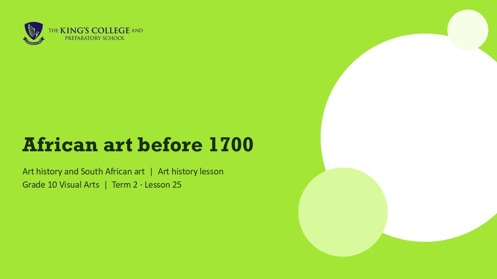

Term 2 · Lesson 25 · Art history lesson
African art before 1700
Start here
Today I will
- Locate and describe key African art traditions before 1700
- Explain how African art connects to faith and power
- Analyse the golden rhinoceros or a Benin plaque
South Africa's highest honour is named after a small gold animal made about 800 years ago. Why might a modern country look back to such an object?
Words to Know
| Word | Meaning |
|---|---|
| Terracotta | Fired clay, often reddish brown, used for sculpture and pottery. |
| Lost-wax casting | A metal-casting method: a wax model is covered in clay, the wax is melted out and molten metal is poured in. |
| Benin bronze | The common name for the brass plaques and heads made by royal guilds in the Kingdom of Benin (in present-day Nigeria). |
| Mapungubwe | The capital of the first known kingdom in southern Africa (c. 1075–1220), at the meeting of the Limpopo and Shashe rivers. |
| Great Zimbabwe | A stone city (c. 1100–1450) with dry-stone walls, near Masvingo in Zimbabwe. |
Slides

Videos
Notes
West Africa (Nok, Ife, Benin), southern Africa (Lydenburg heads, Mapungubwe, Great Zimbabwe) and Lalibela in Ethiopia: art, faith and power.
West and East Africa
- Nok (c. 500 BCE – c. 200 CE): Terracotta heads in central Nigeria with stylised triangular eyes, pierced pupils and detailed hairstyles.
- Ife (c. 12th–15th century): Calm, naturalistic heads in terracotta and copper alloy, probably of rulers (Ooni), in the Yoruba sacred city.
- Benin (from the 1500s): Brass plaques for the Oba's palace in hierarchical scale; many were taken by British troops in 1897.
- Lalibela (12th–13th century): Eleven churches carved down into solid rock in Ethiopia; St George's is cross-shaped and still used for worship.
Southern Africa
- Lydenburg Heads (c. 500 CE): Seven terracotta heads from Mpumalanga with incised bands; two are large enough to be worn as masks, probably for ceremonies.
- Mapungubwe (c. 1075–1220): A trading kingdom that exported gold and ivory via East African ports as far as India and China.
- Golden rhinoceros: Thin gold foil tacked over a now-decayed wooden core, from a royal grave; a symbol of royal power.
- Great Zimbabwe (c. 1100–1450): Granite walls built without mortar, up to about 11 m high, with a conical tower in the Great Enclosure.
Long before 1700, African kingdoms made art of great skill to honour kings, ancestors and faith.
Practical
You need: History booklet, VJ
Analysing an African artwork
- Choose the Mapungubwe golden rhinoceros or a Benin plaque showing the Oba with attendants.
- Describe: date, medium, size if known, place of origin and what is shown.
- Analyse: use the FET formula (identify, describe, effect) for at least three elements or principles.
- Interpret: how does the work express power? Refer to material, scale, symbol or position.
- Opinion: should objects like this be in their country of origin? Give one reason, respectfully.
Test yourself
- Identify the casting method used for the Benin plaques and explain it briefly.
- Explain why the golden rhinoceros is important as an artwork and as a symbol.
- Compare a Nok head with an Ife head in terms of style.
Show answers
1. Lost-wax casting: a wax model is covered in clay, the wax is melted out and molten metal poured in. 2. It is skilled goldwork from a royal grave of southern Africa's first known kingdom, a symbol of royal power, and today the basis of the Order of Mapungubwe. 3. Nok heads are stylised (triangular eyes, pierced pupils); Ife heads are calm and naturalistic.
Finished early?
Link African materials to meaning in one quick study.
- Choose one work: the Mapungubwe golden rhinoceros, a Benin plaque, or a Lydenburg head.
- Draw a quick thumbnail of it in your VJ.
- Write its date, medium and place.
- Write two sentences on how its material or scale shows power.